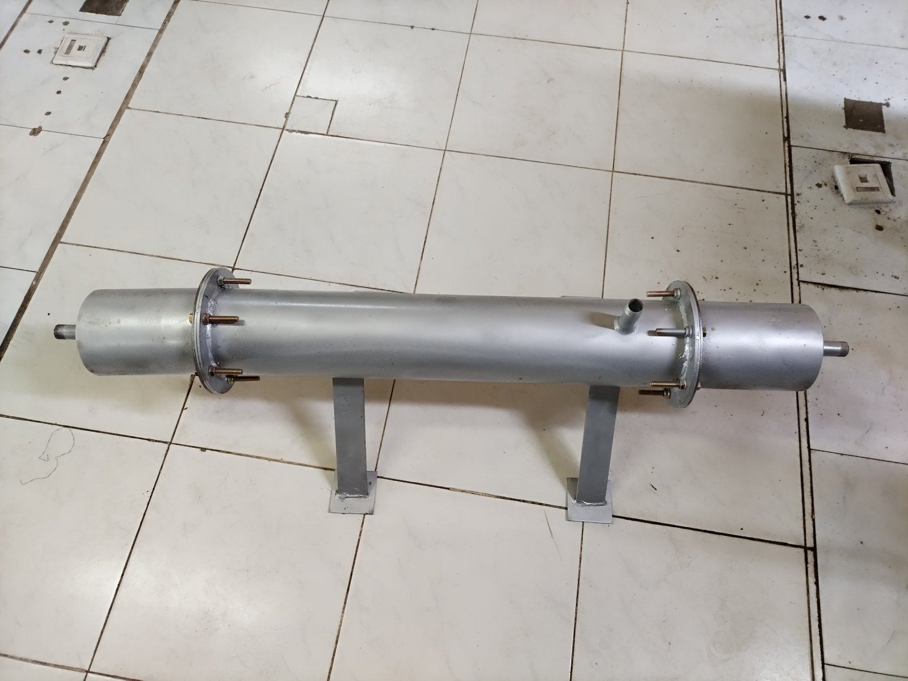
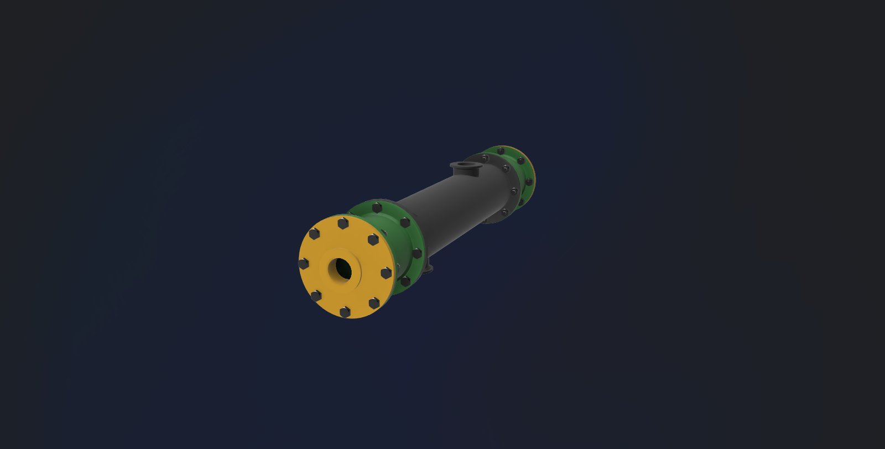
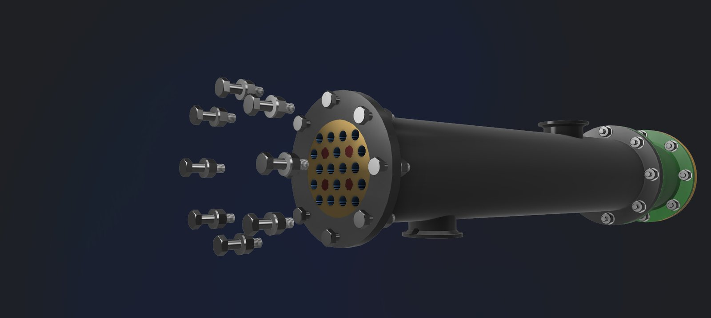
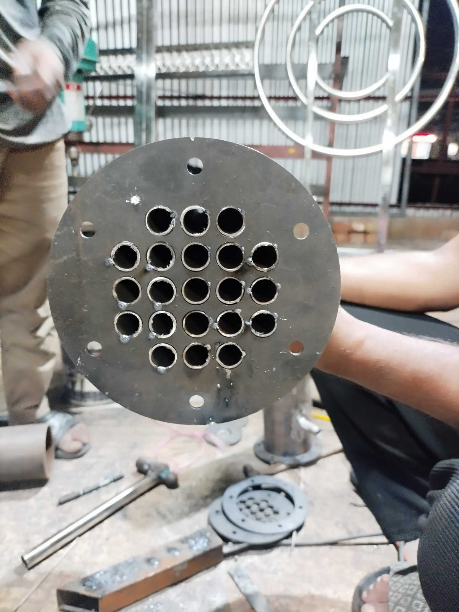
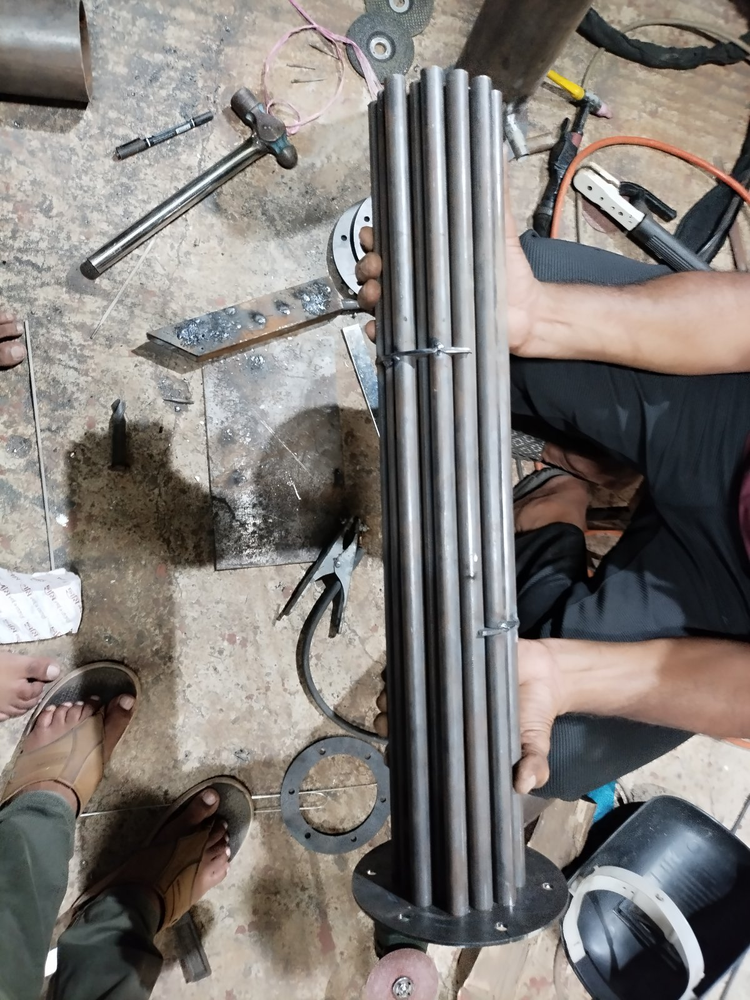

Single-Pass TEMA AEL Shell-and-Tube Heat Exchanger





A TEMA AEL-configuration shell-and-tube heat exchanger — removable channel and cover front head (A), single-pass shell (E), fixed tubesheet rear head (L) — modeled in Fusion 360 and carried through to a welded steel prototype. The assembly includes the shell, tube bundle, tube sheets, channel heads, nozzles, tie rods, baffles, and flanged bolted connections.
The 30° triangular tube layout was chosen over a square pitch for its higher heat transfer coefficient and tube density per shell diameter, accepting the trade-off of harder mechanical tube cleaning — a reasonable choice for a clean, non-fouling service.
From Design to Hardware
- CAD assembly built part-by-part in Fusion 360, matching real TEMA nomenclature and fabrication tolerances
- Tube sheet drilled and tubes fixed on the triangular pitch pattern, then welded into the shell
- Flanged, bolted end connections allow the channel covers to be removed for tube-side cleaning without disturbing the shell
- Fabricated in steel with a welded support stand for bench testing